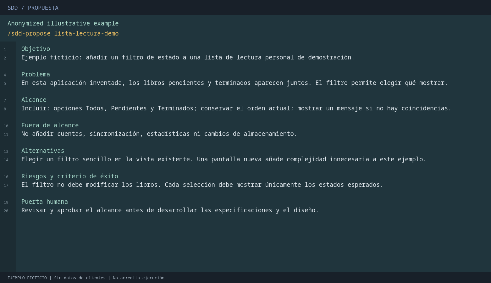
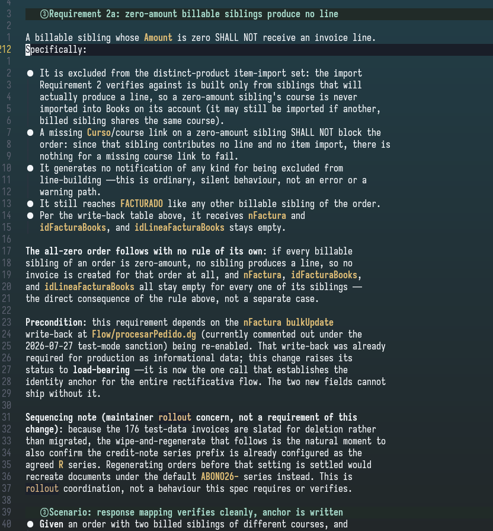
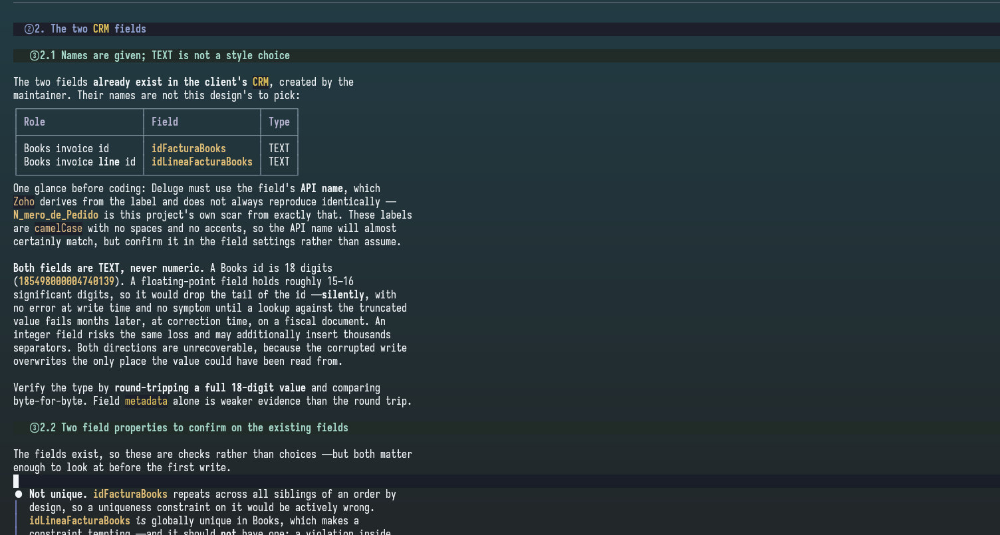
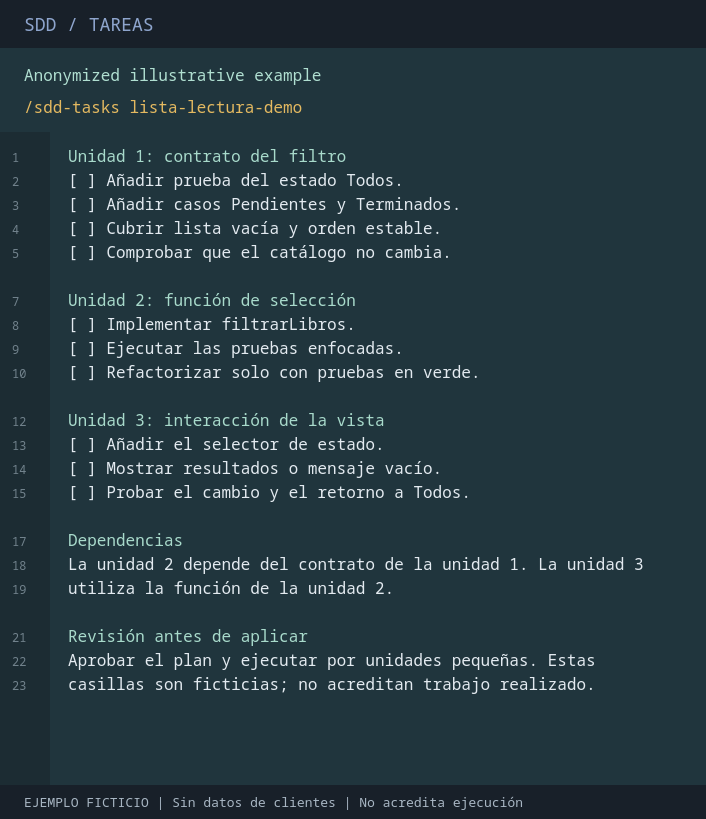
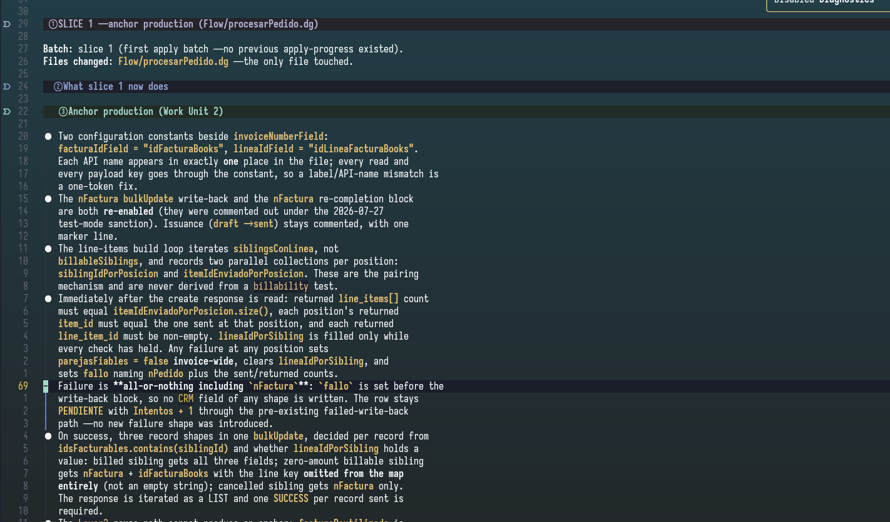

Jarvis · desarrollo guiado por especificaciones · guía ilustrada
De la intención a un cambio verificable con SDD
Define qué debe cambiar, acuerda cómo hacerlo y comprueba el resultado antes de cerrar. Esta guía explica el recorrido para quien trabaja con un agente configurado con Jarvis; las decisiones y la responsabilidad siguen siendo humanas.
Ruta rápida: decidir, planificar, comprobar
Decidir: acepta expresamente SDD y confirma las opciones de la sesión. Inicializa el contexto del proyecto si falta.
Planificar: explora, delimita la propuesta y revisa especificaciones, diseño y tareas antes de implementar.
Comprobar: aplica por unidades con pruebas, verifica contra lo acordado y archiva solo cuando no haya bloqueos.
Ejemplo hipotético: todo el recorrido usa lista-lectura-demo, una aplicación ficticia con un filtro de libros. Las cinco imágenes son ilustraciones sintéticas: no son capturas de ejecución observada ni prueban un cambio completo verificado.
1. Qué es SDD y cuándo merece la pena
Spec-Driven Development (SDD) es un desarrollo guiado por especificaciones: la intención se convierte en requisitos observables, decisiones técnicas y tareas revisables. Esos artefactos, no solo el historial del chat, sirven para contrastar la implementación y retomar el trabajo.
Cambios adecuados
Funcionalidades: un filtro con estados, comportamiento inicial y lista vacía exige acordar varios escenarios.
Errores: si el filtro pierde libros al volver a Todos, documenta la reproducción, el comportamiento esperado y una prueba de regresión.
Refactorizaciones: extraer la selección a una función sin alterar resultados requiere invariantes y pruebas que protejan el comportamiento existente.
Cuándo basta un cambio directo
Una errata, un renombrado mecánico ya entendido o un ajuste aislado sin decisiones abiertas suele necesitar menos ceremonia. Trabaja directamente con revisión y comprobaciones proporcionadas. SDD no se activa por defecto: si el agente lo recomienda, puedes aceptarlo o seguir sin SDD.
Beneficios y límites
El flujo puede reducir ambigüedades, hacer visibles las dependencias y mejorar la trazabilidad y el relevo entre sesiones. No garantiza ausencia de errores, seguridad, menor coste ni entrega más rápida. Una especificación equivocada puede producir una implementación equivocada aunque siga el plan.
La planificación consume tiempo y contexto; los artefactos pueden quedar obsoletos y las herramientas de persistencia pueden fallar. La persona responsable decide el alcance, valida las reglas de negocio, revisa el código y acepta la entrega. Ni un informe del agente ni unas casillas marcadas sustituyen esa revisión.
2. Activar SDD y confirmar la sesión
Con el agente configurado, pide explícitamente «usa SDD para añadir un filtro de estado a la lista de lectura». Antes de cualquier fase, el agente debe recoger tu confirmación de estas cuatro decisiones; un proyecto inicializado no sustituye esta confirmación de sesión.
Ritmo: interactivo (interactive) para revisar cada fase, o automático (auto) para encadenarlas con las paradas de seguridad aplicables.
Artefactos: Hive, OpenSpec, híbrido o sin persistencia; consulta la sección siguiente.
Entrega: preguntar ante riesgo (ask-on-risk), dividir automáticamente (auto-chain), intentar una PR (single-pr) o aceptar una excepción de tamaño (exception-ok).
Presupuesto de revisión: 400 líneas como opción recomendada, 800 u otro límite explícito. Si se prevé superarlo, acuerda división o excepción antes de aplicar; no sacrifiques claridad para ocultar el tamaño.
Para este ejemplo elegiríamos modo interactivo, Hive, preguntar ante riesgo y 400 líneas. Son decisiones hipotéticas, no una sesión ejecutada.
/sdd-init
Inicializa una vez por proyecto, solo si falta el contexto: detecta la tecnología, convenciones y capacidades de pruebas. Después inicia el cambio:
/sdd-new lista-lectura-demo
Este comando inicia exploración y propuesta. En modo interactivo, revisa el resultado de cada fase y aprueba únicamente la siguiente; «continuar» no autoriza todo el recorrido. Antes de la propuesta, aprovecha la ronda de preguntas de producto para concretar destinatarios, reglas, casos límite y exclusiones.
3. Dónde quedan los artefactos
Hive (hive): conserva artefactos en la memoria local del producto, recuperables entre sesiones; no requiere archivos de especificación en el repositorio.
OpenSpec (openspec): conserva archivos revisables con el repositorio, normalmente bajo openspec/changes/lista-lectura-demo/.
Híbrido (hybrid): utiliza ambos almacenes. Necesita coherencia entre las dos copias; una divergencia bloquea, no permite elegir arbitrariamente una.
Sin persistencia (none): devuelve resultados en la conversación; no guarda artefactos SDD ni un archivo duradero de cierre.
Un cambio persistido queda vinculado a su almacén: no intentes trasladarlo cambiando una opción o variable de entorno a mitad del trabajo. Usa las ubicaciones que indique el estado, no supongas que todos los modos crean los mismos archivos.
Guardar en Hive local no demuestra sincronización con la API compartida del equipo. jarvis sync reproduce la configuración registrada del agente; no sincroniza memoria ni avanza fases SDD.
4. Ejemplo hipotético: planificar el filtro
La aplicación ficticia ya muestra libros pendientes y terminados en un orden establecido. Queremos elegir Todos, Pendientes o Terminados, sin modificar el catálogo ni añadir cuentas, sincronización o cambios de almacenamiento.
Exploración y propuesta: por qué y hasta dónde
La exploración identifica la vista existente, cómo representa los estados y qué pruebas hay. La propuesta recoge problema, objetivo, alcance, alternativas, riesgos y exclusiones: un selector en la vista actual evita crear una pantalla innecesaria.
Revisión humana: confirma que el filtro resuelve el problema y que los límites son correctos; ajusta las suposiciones antes de avanzar.

Abrir ilustración a tamaño completo. Propuesta de lista-lectura-demo: ilustración sintética, no ejecución observada. Muestra qué acordar antes de especificar; no acredita implementación.
Especificaciones: qué debe observarse
/sdd-continue lista-lectura-demo
Ejecuta la siguiente fase habilitada por las dependencias, no una fase elegida a partir de un resumen informal. Las especificaciones y el diseño dependen cada uno de la propuesta; las tareas requieren ambos. El recorrido aquí presenta primero especificaciones y después diseño para facilitar la lectura.
Al abrir la vista se selecciona Todos y se conserva el orden original.
Al elegir Pendientes o Terminados solo aparecen los libros de ese estado.
Sin coincidencias se muestra un mensaje de lista vacía.
Volver a Todos recupera la lista completa; el catálogo no cambia.
Revisión humana: comprueba los escenarios normales y los casos límite; una regla ambigua debe resolverse antes de programar.

Abrir ilustración a tamaño completo. Especificaciones del mismo filtro: ilustración sintética, no ejecución observada. Los escenarios son criterios previstos, no resultados de pruebas.
Diseño: cómo preservar esos requisitos
Tras revisar y aprobar la siguiente fase, utiliza de nuevo /sdd-continue lista-lectura-demo. El diseño hipotético mantiene el filtro como estado de la vista y deriva los libros visibles mediante filtrarLibros(catálogo, filtro). No borra elementos del catálogo original.
Revisión humana: confirma límites entre selector, función y vista; exige pruebas de selección, orden y no mutación, además de interacción con el selector.

Abrir ilustración a tamaño completo. Diseño del filtro: ilustración sintética, no ejecución observada. Documenta una decisión técnica prevista; no describe un sistema real validado.
Tareas: unidades pequeñas y comprobables
Cuando especificaciones y diseño estén disponibles y revisados, la siguiente continuación prepara las tareas: contrato y pruebas del filtro, implementación de la función e integración del selector. El plan debe indicar dependencias, comprobaciones y coste previsto de revisión.
Revisión antes de aplicar: acuerda las unidades de entrega, la forma de deshacer cada unidad y las pruebas; resuelve cualquier decisión de tamaño pendiente.

Abrir ilustración a tamaño completo. Tareas de lista-lectura-demo: ilustración sintética, no ejecución observada. Las casillas son un plan, no evidencia de trabajo terminado.
Atajo de planificación:/sdd-ff lista-lectura-demo prepara propuesta, especificaciones, diseño y tareas. No implementa código y no elimina la confirmación de sesión, las revisiones interactivas ni las dependencias obligatorias.
5. Aplicar por unidades con pruebas primero
/sdd-apply lista-lectura-demo
Solo procede con especificaciones, diseño y tareas disponibles, decisiones de revisión resueltas y estado nativo que habilite la fase y el espacio de trabajo. El agente implementa las tareas asignadas por lotes; no debe ampliar el alcance por iniciativa propia.
RED: escribe la prueba más pequeña del comportamiento, ejecútala y registra el fallo esperado antes de implementar. Por ejemplo, elegir Pendientes excluye los terminados.
GREEN: implementa lo mínimo y registra la misma prueba pasando.
Ampliar cobertura: protege Terminados, lista vacía, orden estable, retorno a Todos y catálogo intacto.
Refactorizar: mejora la claridad solo con las pruebas enfocadas en verde; registra las comprobaciones y revisa el diff de la unidad.
Este ciclo es obligatorio cuando el proyecto tiene TDD estricto activo. Usa los comandos reales detectados en la inicialización, no un comando de pruebas inventado para este ejemplo. Si no hay una prueba previa significativa —por ejemplo, documentación pasiva— justifica la excepción y ejecuta las validaciones adecuadas; no inventes un fallo RED.
El artefacto esperado es apply-progress: tareas cubiertas, cambios, comandos y resultados realmente observados, bloqueos y siguiente trabajo pendiente. Las casillas y el progreso deben coincidir; un resumen de chat no basta.

Abrir ilustración a tamaño completo. Progreso hipotético: ilustración sintética, no ejecución observada. Las marcas no prueban pruebas ejecutadas ni una implementación completa; faltan trabajo y revisión.
Punto de control: revisa cada unidad y su evidencia antes de continuar. Si aparece una necesidad nueva, acuerda el cambio de alcance y actualiza los artefactos afectados en lugar de improvisar.
6. Verificar y archivar sin saltarse puertas
/sdd-verify lista-lectura-demo
Una vez completada la implementación, la verificación contrasta especificaciones, diseño, tareas y progreso con el código y las pruebas ejecutadas. Produce un verify-report con cobertura de escenarios, resultados, omisiones y hallazgos críticos, advertencias o sugerencias.
En el ejemplo, habría que comprobar tanto la función como el selector y el regreso a Todos. La revisión de código por sí sola no acredita esos comportamientos. Si una prueba no se ejecuta, debe constar como pendiente o no comprobada, no como aprobada.
Revisión humana: lee el informe, confirma que cubre el estado actual y resuelve los hallazgos. Un fallo devuelve trabajo a apply; después se verifica de nuevo. Aquí no se afirma que el ejemplo haya pasado ninguna prueba.
/sdd-archive lista-lectura-demo
Archiva solo con tareas completas, progreso coherente y verificación vigente que permita el cierre. Se consolida el conocimiento del cambio y se produce un archive-report; en OpenSpec se consolidan las especificaciones y se archiva el cambio, en Hive queda el cierre lógico, y en modo híbrido se requieren ambas partes coherentes. En none solo hay resumen en la conversación.
Los bloqueos de archivo no se pueden dispensar. Ni una aprobación humana ni «archiva de todos modos» sustituyen pruebas, artefactos completos o coherencia del almacén. Archivar tampoco equivale a aprobar una PR, fusionarla o desplegar en producción.
7. Retomar una sesión o resolver un bloqueo
Identifica el proyecto y el cambio exactos. En el agente puedes pedir estado sin ejecutar fases:
/sdd-status lista-lectura-demo
En la terminal, los comandos nativos exponen el estado y la siguiente fase recomendada como JSON:
jarvis sdd status lista-lectura-demo --json
jarvis sdd continue lista-lectura-demo --json
No son equivalentes a ejecutar fases:jarvis sdd continue informa la recomendación; /sdd-continue la ejecuta mediante el agente tras las puertas aplicables. El estado nativo prevalece sobre inferencias del chat. La consulta de estado puede adoptar la vinculación del almacén si el cambio aún no la tenía; no debe describirse como recuperación puramente de lectura.
Falta planificación: recupera propuesta, especificaciones, diseño o tareas según las dependencias; no lances apply con artefactos incompletos.
Apply interrumpido: recupera el progreso validado y retoma solo tareas pendientes. No marques casillas a mano para simular finalización ni reescribas evidencia histórica.
Pruebas fallidas o informe obsoleto: corrige en apply, registra evidencia real y vuelve a verificar antes de archivar.
Hive no disponible o híbrido divergente: conserva ambas copias y comunica el bloqueo. No cambies de almacén como atajo ni elijas la copia más favorable.
Estado nativo no disponible: limita la recuperación a inspección; no inventes permiso para editar, verificar o archivar. Solicita diagnóstico con proyecto, cambio, comando y error sin secretos.
Al retomar, confirma las opciones de la nueva sesión, revisa el estado persistido y aprueba la siguiente fase en modo interactivo. El objetivo es recuperar contexto y evidencia, no reconstruir el éxito a partir de recuerdos.
8. Comandos del agente y siguiente paso
Los comandos con / se escriben en el agente, no en PowerShell ni en Bash. /sdd-new, /sdd-continue, /sdd-ff y /sdd-status los gestiona directamente el orquestador; pueden no aparecer en el autocompletado.
/sdd-explore <tema>: investigar una idea antes de comprometer el alcance.
/sdd-onboard: recorrido guiado con el proyecto; no es una fase adicional del ciclo.
/sdd-init, /sdd-new <change> y /sdd-continue [change]: contexto, inicio y siguiente fase habilitada.
/sdd-ff <name>: planificación; /sdd-apply [change], /sdd-verify [change] y /sdd-archive [change]: implementación, comprobación y cierre.
Las etiquetas /sdd-propose, /sdd-spec, /sdd-design y /sdd-tasks en las ilustraciones identifican fases. Para avanzar, utiliza los comandos documentados de inicio y continuación; las etiquetas no amplían el contrato de comandos del agente.
Antes de cerrar: ¿están acordados los requisitos, revisado el diseño, terminadas las tareas y registradas las pruebas? ¿La verificación es actual y no quedan bloqueos? Si alguna respuesta es no, vuelve al punto correspondiente.